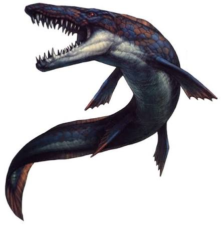

Mosasaurus Mosasaurus adalah genus reptil laut purba raksasa predator puncak yang hidup pada periode Kapur Akhir sekitar 70–66 juta tahun lalu, di mana secara evolusi hewan ini bukanlah dinosaurus melainkan kerabat dekat ular dan kadal modern (seperti komodo) yang spesies terbesarnya (Mosasaurus hoffmanni) dapat tumbuh sepanjang 12–18 meter dengan berat hingga 15 ton. Tubuhnya dirancang sangat hidrodinamis menyerupai torpedo bersisik keras dengan empat sirip dayung sebagai kemudi dan ekor vertikal mirip hiu yang menyabet ke samping sebagai motor penggerak utamanya. Untuk berburu mangsa seperti ikan, hiu, penyu, hingga sesama jenisnya, Mosasaurus mengandalkan lubang hidung di atas moncong untuk bernapas efisien, sendi rahang bawah fleksibel yang bisa melebar ke samping untuk menelan mangsa besar bulat-bulat mirip ular, serta puluhan gigi setajam silet yang diperkuat barisan gigi tambahan di langit-langit mulut (pterygoid) untuk mengunci mangsa. Sebagai hewan yang sepenuhnya hidup dan melahirkan anaknya (vivipar) di dalam air, masa kejayaan penguasa lautan purba ini akhirnya punah secara massal sekitar 66 juta tahun lalu akibat dampak tumbukan asteroid raksasa yang menghantam Bumi.